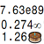
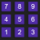
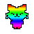

omsi's site v2.1
Adventurer: An incremental game made by my brother and I, based on Kingdom of Loathing.

Notations: A tool that shows you how a number would be formatted in a variety of notations.

Numpad: A small arcade game based around pressing keys on the numpad in a circle.

Colors: A tool that lets you make a custom resource color template for Kittens Game.
Loops: A modified version of Idle Loops with additional content.
Heirlooms: An heirloom upgrade calculator for Trimps.